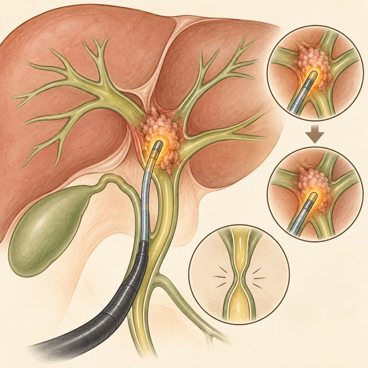
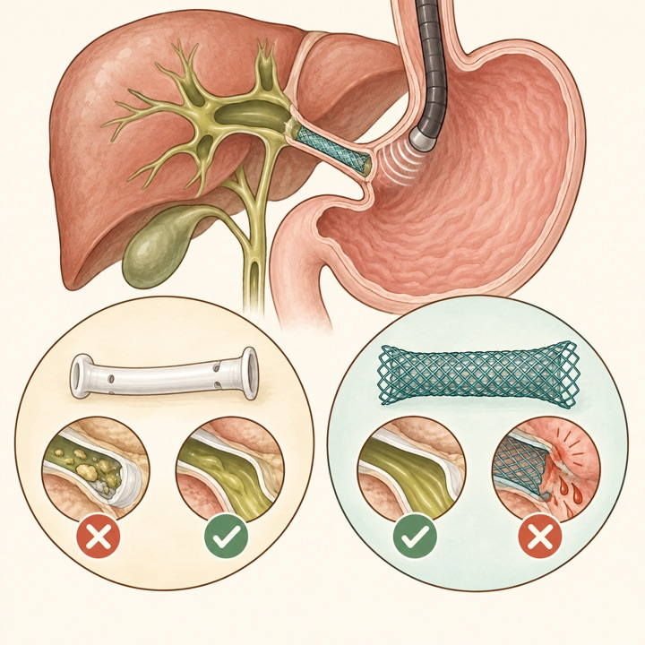
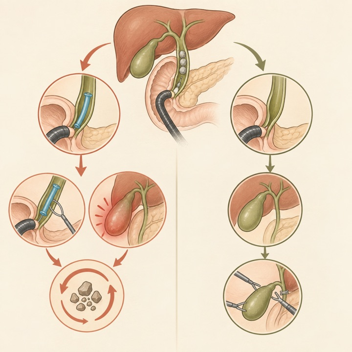
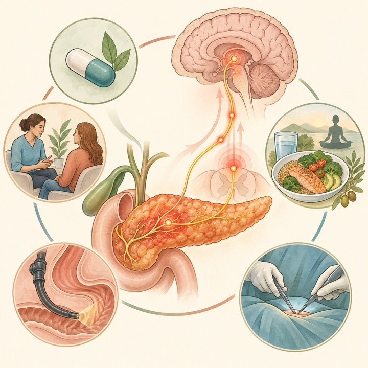
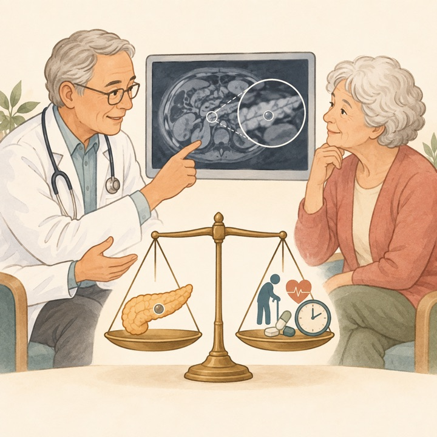
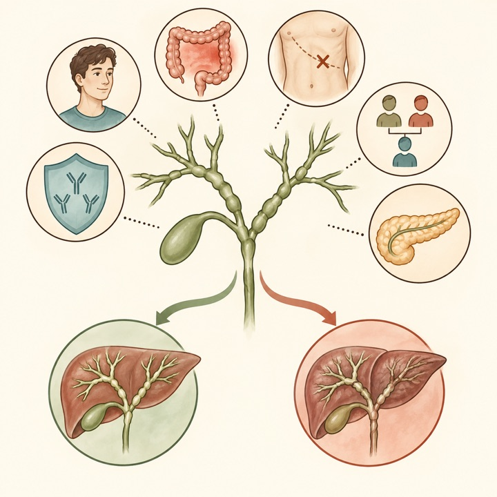
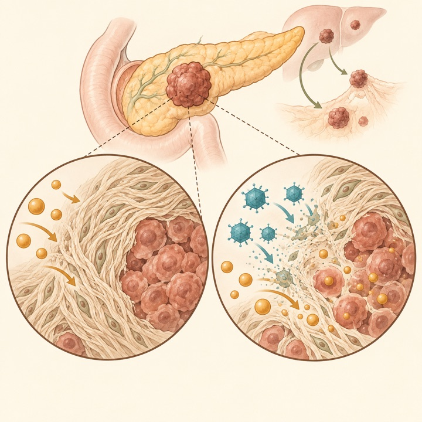
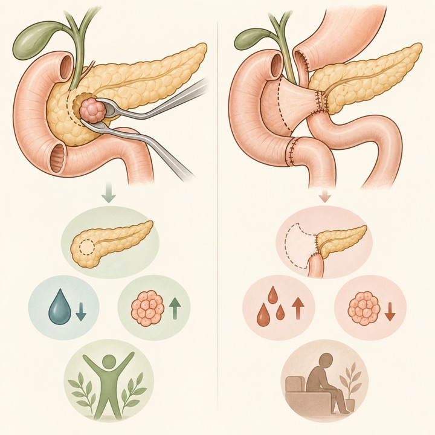
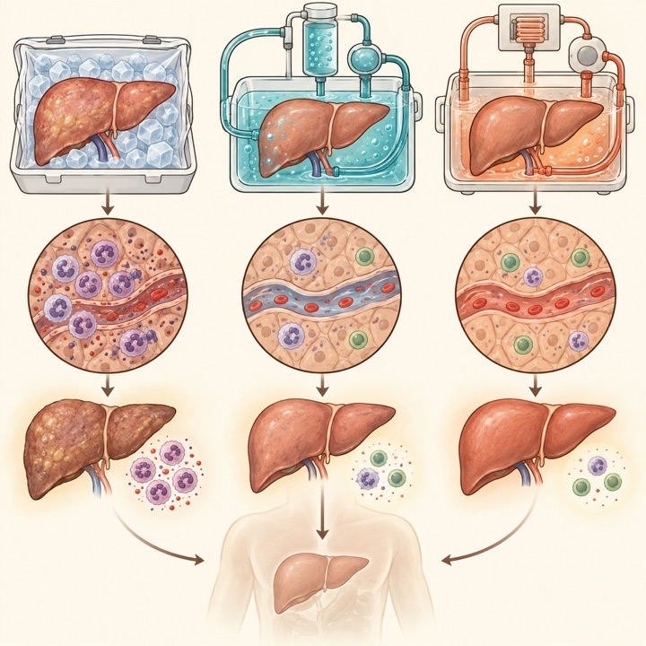

VIRAGE：腫瘍溶解ウイルス＋GnPの無作為化第IIb相
Nature Medicine / Q1Randomized phase 2b
転移性PDAC 101例。ITTのOS差は有意でない一方、PFSと奏効持続期間は改善し、第III相での検証を支持します。
Tokai University Pancreatobiliary Group
This Week's Pancreatobiliary Research Highlights
臨床的重要性、研究デザイン、診療への応用可能性を基準に4報を選定しました。IFとJCR quartileは2025年値（2026年公表、判明した最良カテゴリ）を使用し、確実に確認できない場合はQ4とする方針です。
転移性PDAC 101例。ITTのOS差は有意でない一方、PFSと奏効持続期間は改善し、第III相での検証を支持します。
膵液瘻は増えましたが、重大合併症、新規糖尿病、在院日数、長期QOLは核出術が良好でした。
併存疾患、余命、介入適応を組み込み、安定した小嚢胞では監視終了を共有意思決定で検討します。
早期死亡低下との関連を示しましたが、暦年調整で長期関連は減弱し、非腫瘍性胆道閉塞は増加しました。
日本語: 内視鏡的胆道ドレナージを受けた切除不能肝門部胆管癌475例を、RFA回数を時間依存曝露として解析しました。初回ドレナージ7日以内のRFAは6か月死亡低下と関連し（調整HR 0.34）、3か月landmarkでは2回以上施行群の死亡も少ない結果でした。全追跡では2回以上のRFAが低死亡と関連しましたが、暦年調整後は減弱（HR 0.77、P=0.209）。再発胆道閉塞は37.9%対22.1%と多く、主に非腫瘍性でした。後ろ向き研究でimmortal-timeや治療選択の影響を完全には除けず、無作為化試験を待つべきです。
English: Early and repeated endobiliary RFA was associated with lower short-term mortality, but the overall association weakened after calendar-year adjustment and non-tumor recurrent biliary obstruction increased.

日本語: EUS-HGSの6比較研究を統合し、金属ステントはプラスチックより胆道再閉塞までの期間が長く（HR 1.83）、再閉塞も少ない一方、手技関連有害事象は多い結果でした。臨床成功率と再介入成功率は差がありません。生命予後、胆管炎歴、抜去・再介入の必要性を踏まえた個別選択を支持しますが、含まれた研究数が少なく、ステント設計や手技の異質性を含むため、単一の最適ステントを確定するものではありません。
English: Metal stents provided longer patency and less recurrent obstruction but more procedure-related adverse events. Clinical success and reintervention success were similar.

日本語: ERCPで総胆管結石を完全採石した後、胆嚢摘出術を待つ患者10研究1,259例（予防的胆管ステント692例）を統合しました。再発性総胆管結石は6.9%対13.9%でしたが、統合オッズ比は有意差を示さず（OR 0.55、95%CI 0.21〜1.43、I²=58%）、ステント群では再ERCP（OR 3.13、95%CI 1.32〜7.42）と急性胆嚢炎（OR 2.53、95%CI 1.01〜6.38）が多い結果でした。胆管炎と膵炎には明確な差がありません。完全採石後のルーチン予防留置を支持しない所見ですが、研究デザインの混在、中等度の異質性、イベント数の少なさを踏まえ、早期胆嚢摘出が困難な個別症例への適用は別途判断が必要です。
English: Across 10 studies and 1,259 patients, prophylactic biliary stenting after complete duct clearance did not significantly reduce recurrent choledocholithiasis and was associated with more repeat ERCP and acute cholecystitis. Routine placement while awaiting cholecystectomy is not supported.

Pain management in chronic pancreatitis: beyond opioids；慢性膵炎疼痛管理：オピオイドを超えた機序別・多面的アプローチ
日本語: 慢性膵炎疼痛を侵害受容性、神経障害性、中枢感作を伴うnociplastic painの重なりとして捉え直し、機序別の多面的管理を提示します。薬物ではgabapentinoidの根拠が比較的強く、認知行動療法、栄養・生活介入、閉塞病変への内視鏡・外科治療を組み合わせます。オピオイドの有害性と依存リスクを考慮しつつ、患者報告アウトカム、感覚検査、画像、バイオマーカーで表現型を定める方向性です。ただし非薬物介入や手技にはsham対照試験が乏しく、個別化戦略の多くは今後の検証課題です。
English: Chronic pancreatitis pain should be phenotyped across nociceptive, neuropathic, and nociplastic mechanisms and treated with an individualized multimodal strategy rather than opioid escalation alone.

日本語: 高齢者の膵嚢胞監視を、年齢だけでなく併存疾患、推定余命、将来の侵襲的治療への適格性で判断するBest Practice Adviceです。重大な併存疾患を伴う低リスク嚢胞では通常監視を勧めず、65歳超で15 mm以下、5年間安定しworrisome feature／high-risk stigmataのない嚢胞では終了を検討します。中止時期を患者と共有意思決定する実務的枠組みですが、系統的レビューではなく推奨強度の正式評価もないため、個々の嚢胞型・家族歴・施設方針を加味する必要があります。
English: Surveillance in older adults should be continued only when life expectancy, comorbidity burden, and fitness for intervention make detection clinically meaningful. Stable small low-risk cysts may justify discontinuation.

日本語: PSC 155例・二次性硬化性胆管炎79例の導出コホートから、若年、IBD、肝胆膵手術歴なし、自己免疫併存、自己免疫疾患家族歴、膵異常なしの6変数でPSC-DMを作成しました。外部検証142例でAUROC 0.95、探索的評価では非専門医の診断正確度が78.6%から94.3%へ改善しました。日常情報で紹介判断を支援できる一方、後ろ向き選択例に基づくモデルで、MRCP/ERCP・病理・経過を置き換える診断確定ツールではありません。
English: A six-variable clinical model distinguished PSC from secondary sclerosing cholangitis with an external-validation AUROC of 0.95 and improved non-expert classification in an exploratory analysis.

日本語: 一次治療の転移性PDAC 101例をVCN-01＋gemcitabine/nab-paclitaxel（GnP）とGnP単独に無作為化しました。ITTのOS中央値は10.6対8.6か月（HR 0.69、P=0.196）で有意差なし、PFSは5.6対4.6か月（HR 0.63、P=0.046）。規定治療を満たしたFASではOS 10.8対8.6か月、PFS 7.0対4.6か月、奏効持続11.2対5.4か月でした。VCN-01関連の重篤事象は22.6%で、発熱、インフルエンザ様症状、肝酵素上昇、血小板低下が増加。主要OS評価が解析集団で一貫せず、非盲検・小規模であるため、探索的に有望だが第III相確認が必要です。
English: VCN-01 plus GnP improved PFS and response duration, while ITT OS did not reach statistical significance. The signal is promising but requires a blinded phase 3 trial.

日本語: 4高症例数施設660例を1:1傾向スコアマッチングし、核出術と膵頭十二指腸切除を比較しました。核出術は臨床的膵液瘻が33.2%対10.6%と多い一方、重大合併症は8.8%対17.1%、胃排出遅延4.6%対25.3%、在院9対15日、新規糖尿病7.8%対33.3%で、QOLと復職も良好でした。利点は2.5 cm以下で大きい結果です。手術選択の残余交絡と腫瘍径不均衡があり、主膵管距離、腫瘍型、術者経験を含む前向き検証が必要です。
English: Enucleation increased clinically relevant fistula but reduced major morbidity, delayed gastric emptying, hospital stay, and new diabetes, with better long-term quality of life.

日本語: 拡大基準脳死ドナー肝を静的冷保存、HOPE、NMPへ割り付けたRCTの機序サブ研究で47例を解析しました。HOPEとNMPはいずれも早期再灌流時の肝内好中球浸潤と骨髄系細胞の炎症・接着表現型を抑え、HOPEでは末梢NK/T細胞の回復と全身好中球減少がより明瞭でした。機械灌流の利益に免疫調節が関与することをヒト試料で示しますが、少数の探索的機序研究で臨床主要評価項目は未開示のため、HOPEとNMPの優劣や患者転帰を結論づける研究ではありません。
English: Both HOPE and NMP attenuated neutrophil-driven hepatic and systemic inflammation. HOPE accelerated peripheral lymphocyte recovery, supporting immunomodulation as a mechanism of machine perfusion.

ClinicalTrials.gov公式APIを2026年10月4日に検索し、9月28日〜10月4日に新規公開された直接関連研究13件と、診療・開発上重要な更新15件を選択しました。一般固形癌のみ、嚢胞性線維症、糖尿病、非胆膵領域のEUS、PBCなどは除外しています。JRCTは検索していません。
| 新規｜PSC掻痒 | NCT07843420 nemolizumabによる中等度〜重度慢性肝性掻痒 2026-09-28公開 / 第II相 / 15例 / Not yet recruiting。 |
|---|---|
| 新規｜進行PDAC | NCT07845565 FMT＋SHR-1701＋GnP一次治療 2026-09-29公開 / 第II相 / 60例 / Not yet recruiting。 |
| 新規｜PDAC肝転移 | NCT07845617 切除後肝転移への肝動注ポンプ化学療法 2026-09-29公開 / 10例 / Recruiting。 |
| 新規｜肝内胆管癌 | NCT07846267 凍結療法＋anlotinib＋TQB2868 2026-09-29公開 / 第II相 / 56例 / Not yet recruiting。 |
| 新規｜局所進行iCCA | NCT07847710 retlirafusp alfa＋famitinib＋GEMOX-HAIC周術期療法 2026-09-29公開 / 第II相 / 81例 / Recruiting。 |
| 新規｜切除不能PDAC | NCT07850336 EUSガイド下膵腫瘍RFA 2026-09-30公開 / 56例 / Not yet recruiting。 |
| 新規｜進行BTC | NCT07850791 sacituzumab tirumotecan＋pembrolizumab 2026-09-30公開 / 第II相 / 38例 / Recruiting。 |
| 新規｜急性胆嚢炎 | NCT07851935 腹腔鏡下胆嚢摘出術の局所bupivacaine灌流 2026-10-01公開 / 第IV相 / 64例 / Completed。 |
| 新規｜BTC | NCT07853690 胆道癌に対するhistotripsy 2026-10-02公開 / 24例 / Not yet recruiting。 |
| 新規｜膵液瘻 | NCT07854353 膵頭十二指腸切除後膵液瘻の前向き研究 2026-10-02公開 / 200例 / Not yet recruiting。 |
| 新規｜胆石症 | NCT07854379 胆嚢温存採石に対する一般意識調査 2026-10-02公開 / 5,000例 / Recruiting。 |
| 新規｜BTC術前治療 | NCT07854600 ivonescimab＋GEMOX術前・conversion療法 2026-10-02公開 / 第II相 / 87例 / Recruiting。 |
| 新規｜進行PDAC | NCT07854977 FMT＋NALIRIFOX＋serplulimab一次治療 2026-10-02公開 / 第II相 / 40例 / Not yet recruiting。 |
| 更新｜進行BTC | NCT07265674 nanvuranlat対医師選択治療 2026-09-29更新 / 第III相 / 480例 / Recruiting。 |
| 更新｜膵切除後 | NCT07768384 合併症例への4週集中リハビリ 2026-09-29更新 / 40例 / Recruiting。 |
| 更新｜BR/LA-PDAC | NCT05825066 境界切除可能・局所進行PDACの術前化学療法 2026-09-28更新 / 第II相 / 64例 / Recruiting。 |
| 更新｜局所進行PDAC | NCT03257033 放射線後の動注gemcitabine対GnP 2026-09-30更新 / 第III相 / 190例 / Active, not recruiting。 |
| 更新｜BRCA-PDAC | NCT04548752 olaparib±pembrolizumab 2026-09-29更新 / 第II相 / 88例 / Active, not recruiting。 |
| 更新｜KRAS G12D PDAC | NCT07621718 / RASolute 305 zoldonrasib＋化学療法第III相 2026-09-28更新 / 670例 / Recruiting。 |
| 更新｜肝内胆管癌 | NCT07766187 durvalumab＋histotripsy 2026-09-29更新 / 第II相 / 12例 / Not yet recruiting。 |
| 更新｜PDAC診断 | NCT05641896 消化器癌の18F-FAPI-74 PET 2026-10-01更新 / 第II相 / 112例 / Completed。 |
| 更新｜進行PDAC | NCT05475366 転写シグネチャによる一次化学療法選択 2026-10-01更新 / 79例 / Active, not recruiting。 |
| 更新｜急性胆嚢炎 | NCT07568080 / SnapChole 国際前向きプラットフォーム研究 2026-10-01更新 / 1,500例 / Not yet recruiting。 |
| 更新｜糖尿病後膵癌 | NCT06803771 糖尿病診断後の膵健康サーベイランス 2026-09-28更新 / 5,000例 / Recruiting。 |
| 更新｜転移性PDAC | NCT07490301 telisotuzumab adizutecan＋FOLFOX対標準治療 2026-10-02更新 / 第II/III相 / 900例 / Recruiting。 |
| 更新｜機械灌流肝移植 | NCT07585890 欧州の転帰benchmark構築 2026-09-30更新 / 10,000例 / Recruiting。 |
| 更新｜慢性膵炎疼痛 | NCT06205342 間葉系幹細胞治療 2026-09-30更新 / Early phase I / 48例 / Recruiting。 |
| 更新｜PSC | NCT05627362 elafibranorの安全性・有効性 2026-10-01更新 / 第II相 / 68例 / Active, not recruiting。 |
PubMedの2026年9月28日〜10月4日EDATに加え、Nature Reviews Gastroenterology & Hepatology、The Lancet Gastroenterology & Hepatology、Gastroenterology、Gut、Clinical Gastroenterology and Hepatology、Annals of Surgery、Journal of Hepato-Biliary-Pancreatic Sciences、Gastrointestinal Endoscopy、Endoscopy、Surgical Endoscopy、Endoscopy International Open、VideoGIE、Clinical Endoscopy、Digestive Endoscopy、DEN Open、iGIEの公式サイトと、選定論文の公式出版社ページを直接確認しました。出版社側のアクセス制限がある場合は公式DOI解決先とPubMed索引を突合しました。IFは2025 Journal Impact Factorを優先し、quartileを確実に確認できない誌は依頼方針に従いQ4と表示しています。Digestive EndoscopyのIF 5.1はJCRの訂正予定値です。予防的胆管ステントのメタ解析（PMID: 42443680）は対象期間外の2026年7月13日公開ですが、臨床的重要性を踏まえ依頼により特別追加しました。速報・ahead of printの情報は更新されることがあります。
2026年9月21日〜9月27日版
2026年9月14日〜9月20日版
2026年9月9日〜9月15日版
2026年8月31日〜9月6日版
2026年8月24日〜8月30日版
2026年8月17日〜8月23日版
2026年8月10日〜8月16日版
2026年8月3日〜8月9日版
2026年7月27日〜8月2日版
2026年7月20日〜7月26日版
2026年7月13日〜7月19日版
2026年7月6日〜7月12日版
医療従事者向け情報： 本ページは医師・医学生・研究者向けの文献整理であり、患者向け広告、診療ガイドライン、個別の診断・治療助言ではありません。掲載内容は公開時点の情報に基づき、原著論文・最新ガイドライン・各施設の方針をご確認ください。